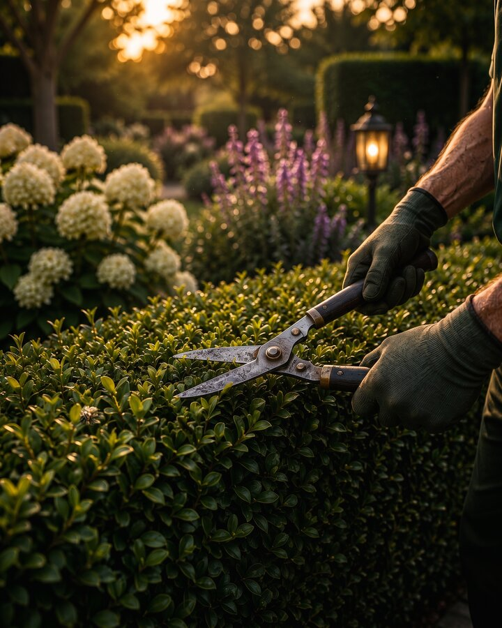
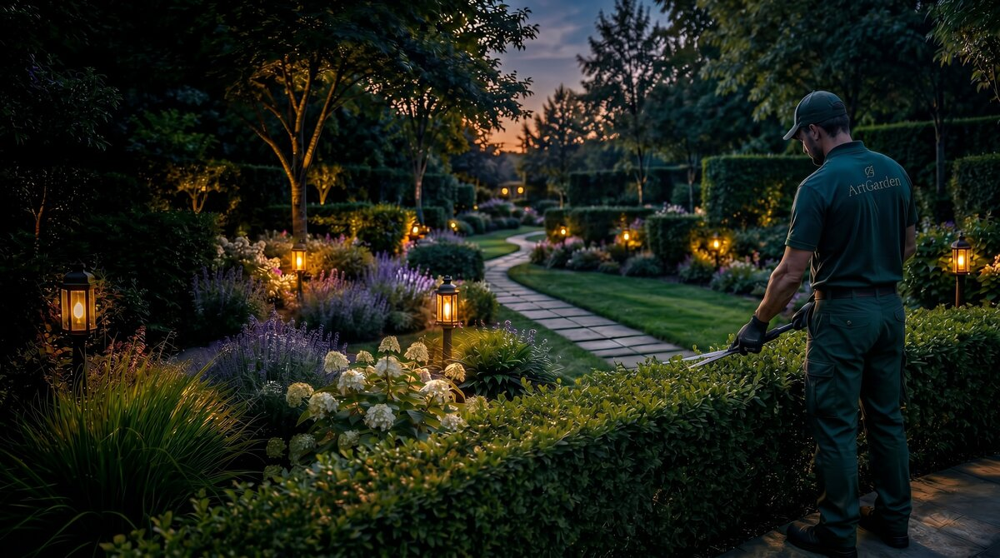
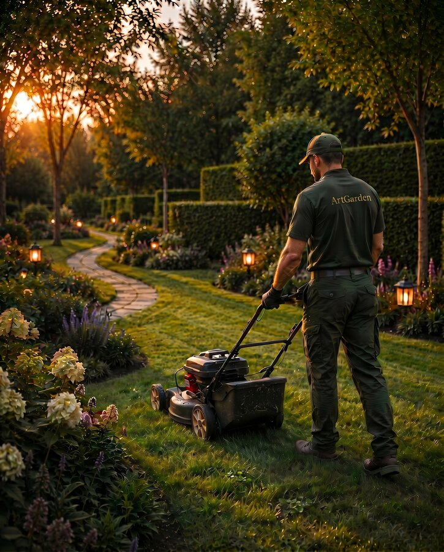
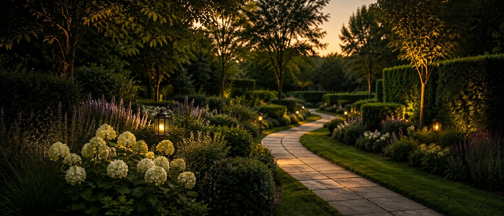

Kertfenntartás
Egy prémium kert szépsége a részletekben rejlik.
Folyamatos gondozással őrizzük meg a harmóniát minden évszakban, hogy kertje mindig a legjobb formáját mutassa.
KÉREK AJÁNLATOTRENDSZERES GONDOZÁS
Megbízható, ütemezett kertgondozás az év minden időszakában.
SÖVÉNY ÉS FAÁPOLÁS
Szakértő metszés a növények egészségéért és esztétikus megjelenéséért.
NÖVÉNYÁPOLÁS
Tápanyag-utánpótlás, talajápolás és növényvédelem a dús, egészséges növényzetért.
TERÜLET TISZTÁN TARTÁSA
Gyomlálás, lombgyűjtés és általános tisztán tartás a rendezett megjelenés érdekében.
SZEZONÁLIS FELKÉSZÍTÉS
Felkészítjük kertjét az évszakok változására, hogy mindig csúcsformában legyen.
MEGBÍZHATÓ CSAPAT
Tapasztalt kertészeink odafigyeléssel és szakértelemmel gondoskodnak kertjéről.
FOLYAMATOS GONDOZÁS, TARTÓS ÉRTÉK
Kertje jó kezekben, egész évben.
Kertfenntartási szolgáltatásunkkal biztosítjuk, hogy a gondosan megtervezett kertje hosszú távon is megőrizze szépségét és értékét.
- Rendszeres kertgondozás az Ön igényei szerint
- Szakértő csapat modern eszközökkel
- Növények egészségének megőrzése
- Szezonális munkák teljes körű elvégzése
- Rugalmas időpontok és megbízható kivitelezés


HOGYAN DOLGOZUNK?
KAPCSOLATFELVÉTEL
Vegye fel velünk a kapcsolatot telefonon vagy e-mailben.
FELMÉRÉS
Felmérjük kertje állapotát és megbeszéljük az igényeit.
TERV ÉS ÜTEMEZÉS
Javaslatot adunk a szükséges munkákra és az ütemezésre.
GONDOZÁS
Elvégezzük a megbeszélt feladatokat a legnagyobb odafigyeléssel.
FOLYAMATOS TÖRŐDÉS
Rendszeres ellenőrzéssel biztosítjuk kertje hosszú távú szépségét.

Élvezze kertje szépségét, mi gondoskodunk róla.
Bízza ránk kertje fenntartását, és élvezze a tökéletes harmóniát minden nap.
KÉREK AJÁNLATOT